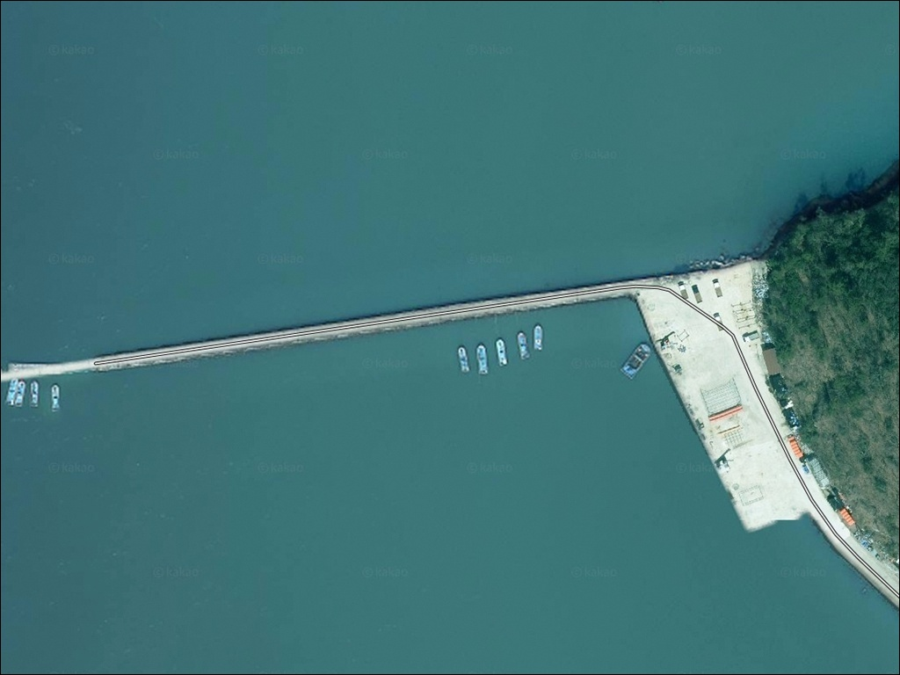
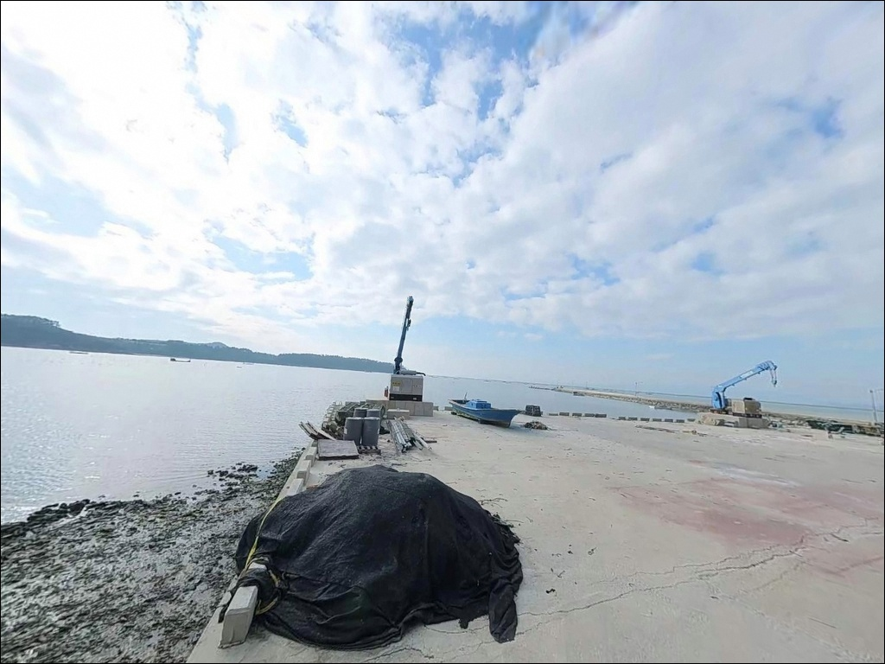
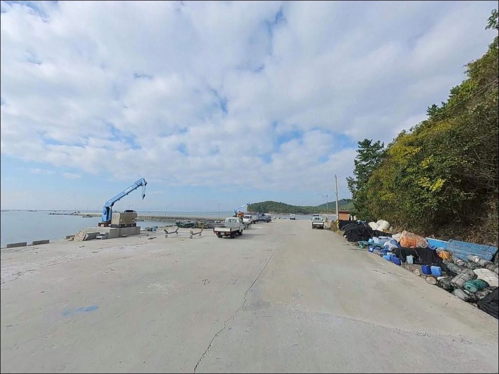
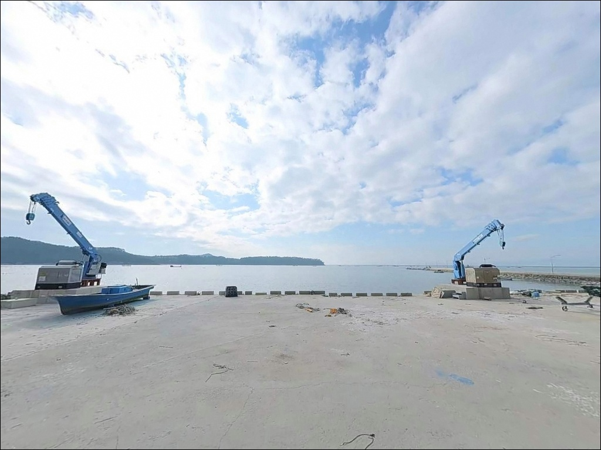
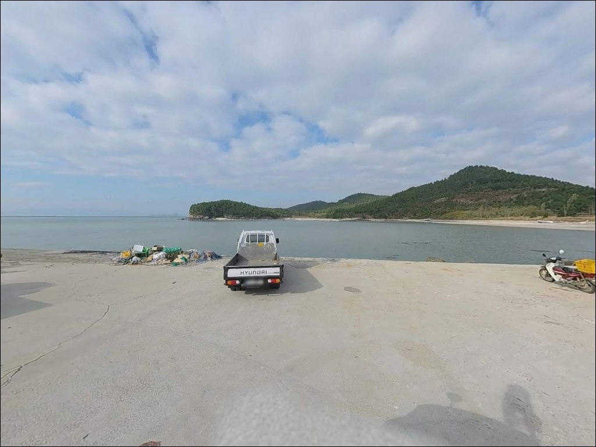
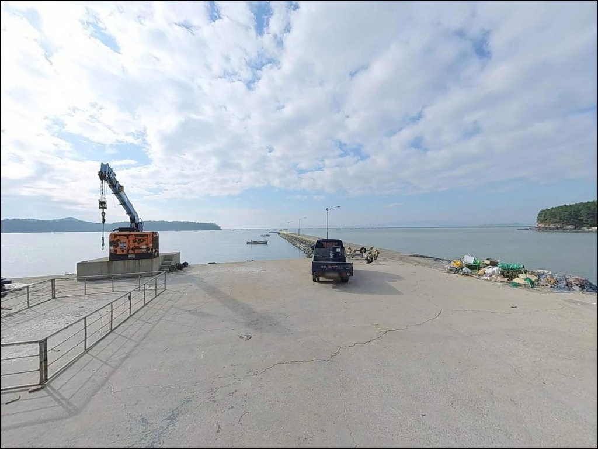
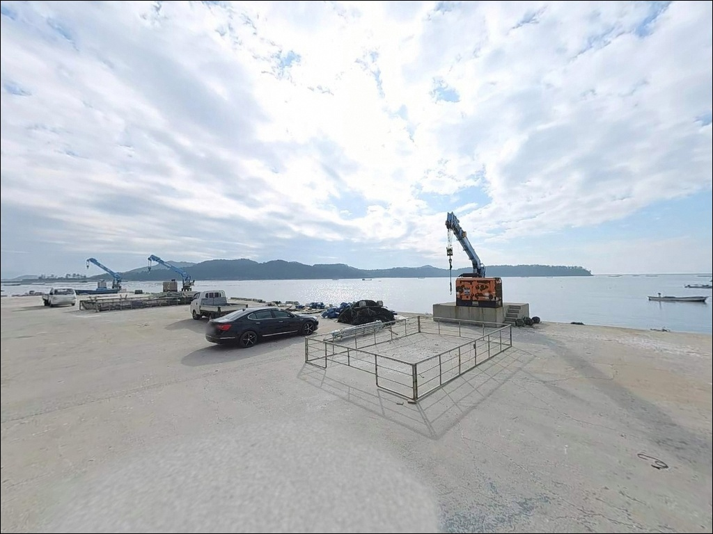
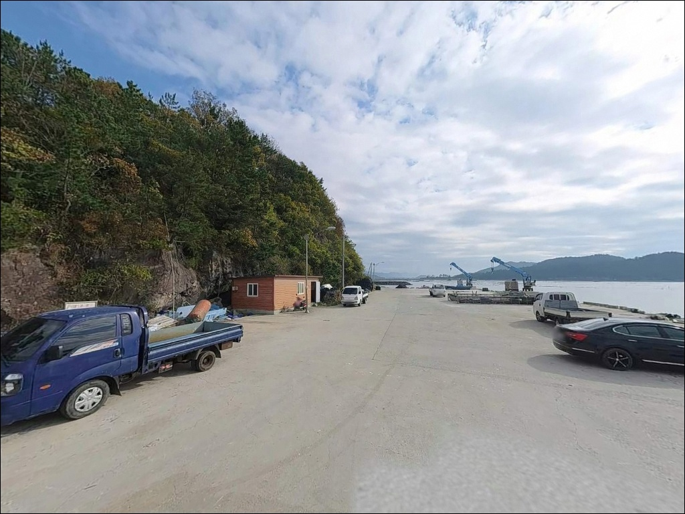
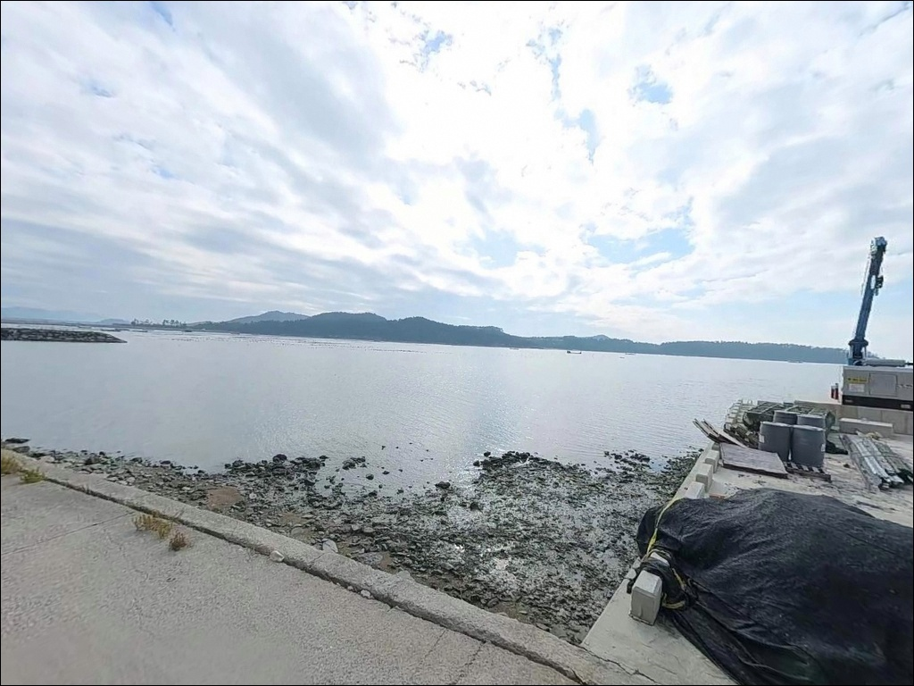

학가리 선착장, 전남 해남군 잔잔한 물결과 어울리는 차박, 낚시 한적한 포인트
이 페이지에는 광고(제휴 링크 포함)가 있으며, 광고 링크를 통해 구매하면 운영자가 판매 수익 또는 수수료를 받을 수 있습니다. 포인트 사진: 카카오맵 스카이뷰·로드뷰. 이 페이지의 지도·사진 이미지는 카카오맵의 실제 서비스 이미지와 다를 수 있습니다.


포인트 안내
학가리 선착장
전남 해남군 송지면 학가리 657-1
갯벌형 내만 선착장은 물때를 놓치면
선착장 바닥 자체가 드러납니다.
학가리 선착장은 수심이 얕고
뻘이 넓게 형성된 서남해 전형적인 구조로,
만조 전후 타이밍 계산이 방문 성패를 가르는
포인트입니다.
전남 해남군 송지면 학가리,
해남반도 남서쪽 끝자락에 자리한
학가리 선착장은 시루섬을 마주보는
소규모 어촌 선착장입니다.
온라인에서 낚시 자료를 찾기 어려운
아직 알려지지 않은 조용한 포인트이며,
직접 발품을 팔아야 하는 탐험형 성격의 자리입니다.
이 글은
학가리 선착장의 지형 구조와 진입 환경,
물때 판단 기준, 낚시 방식 적합성에 집중합니다.
조황 단정이나 특정 어종 보장은
이 글의 범위에 포함되지 않습니다.

1. 진입 동선과 포인트 접근성
학가리 선착장은 국도 77호선에서
학가1길 방향으로 빠져 마을 안쪽으로
진입하는 구조입니다.
국도에서 선착장까지의 마을 내 도로는
폭이 좁은 어촌 농로 수준으로,
대형 SUV나 캠핑 장비를 실은 차량은
출발 전에 위성지도로 진입로를 확인하는 편이 좋습니다.
선착장 규모는 물양장 약 30m,
선착장 약 112m 수준의 소규모 어항입니다.
회차 공간이 넉넉하지 않아
선착장 진입 전 마을 공터를 먼저 확인하고
진입하는 동선이 안전합니다.
현재 어촌뉴딜 3.0 사업이 진행 중인 곳으로
마을 내 도로 확장 및 시설 정비 공사가
이루어지고 있을 가능성이 있습니다.
공사 구간에 따라 주차 가능 공간이
평소보다 좁아질 수 있으므로
방문 전 현장 여건 확인이 먼저입니다.

2. 차박 환경과 야간 체류 여건
학가리 선착장 일대는 민가와 가까운
어촌 마을 끝단입니다.
완전히 고립된 환경은 아니지만
차량 통행이 많지 않아
야간 분위기는 조용한 편입니다.
다만 어민의 새벽 조업 시작 특성상
이른 새벽에 차량 이동이 있을 수 있습니다.
가로등 수가 제한적인 소규모 어촌 마을이라
야간에는 개인 조명 장비가 필수입니다.
선착장 주차 공간이 넉넉하지 않아
차박을 메인 목적으로 삼기보다는
낚시 후 단기 체류 용도로 활용하는 편이
현실적인 접근입니다.
어촌뉴딜 공사가 진행 중일 경우
선착장 주변 가용 공간이 평소보다
더 제한될 수 있습니다.
차박 여건은 공사 상황에 따라
크게 달라지므로 방문 전에
현장 공간 여부를 먼저 파악하고 가는 것이 좋습니다.


3. 주변 편의시설 및 인프라 현황
학가리 선착장 주변은
전형적인 소규모 어촌 마을 환경입니다.
선착장 반경 내 편의점이나 식당을
기대하기 어렵기 때문에
식수·얼음·낚시 소품·연료는 출발 전에 완비하고
진입하는 것이 기본 준비입니다.
송지면 소재지 방향으로 이동하면
소규모 식당과 개인 슈퍼마켓을
이용할 수 있는 편입니다.
부족한 소품이 있다면
국도 77호선 변 편의시설을 사전에
파악해두는 동선이 효율적입니다.
응급 상황이 생기면
해남군 송지면보건지소가
가장 가까운 의료 기관입니다.
출발 전 비상약품과 충분한 수분을 챙기는 것이
기본입니다.

4. 물때가 결정하는 학가리 선착장 방문 조건
학가리 선착장 방문 전 가장 먼저 확인할 것은
물때입니다.
선착장 수심이 0.6~1.7m 수준으로 얕고
바닥이 뻘 위주인 갯벌형 구조라
조수가 빠지면 바닥이 드러나
낚시 진입 자체가 불가능해지는 시간대가 생깁니다.
바다타임에서 학가리 기준 물때를 확인하고
만조 전후 타이밍을 노려 출발 시각을 맞추는 것이
기본 전략입니다.
해남 남단 특성상 기상 변화가 빠른 편입니다.
기상청 해상특보를 당일 아침 다시 한번 확인하고
강풍이나 파고 예보가 있으면
계획을 조정하는 것이 맞습니다.
뻘 바닥 선착장은 바닥이 젖어 미끄러울 수 있으므로
미끄럼 방지 신발과 구명조끼는 기본 착용입니다.
학가리 일대는 꽃게·굴 양식이 이루어지는 해역입니다.
양식장 부표 주변은 채비 엉킴 및
어민 재산 피해를 유발할 수 있으므로
투척 방향을 사전에 파악해두는 것이 기본 매너입니다.
어민 조업 동선과 겹치지 않는 자리를
먼저 확인하고 자리를 잡아야 합니다.

5. 지형 기반 낚시 여건 분석
학가리 선착장의 핵심 지형은
얕은 펄 바닥의 내만 구조입니다.
선착장 마주편으로 시루섬이 있으며,
간조 시에는 시루섬까지 연결되는 독특한 지형입니다.
이 구조가 시루섬 방향 수로 경계를
조류가 흐르는 탐색 구간으로 만들어냅니다.
선착장 주변 수심이 매우 얕아
본격적인 원투 공략보다는
선착장 끝단이나 외곽 석축에서
조류 흐름을 타는 방식이 이 지형과 잘 맞습니다.
인근 해역은 조류가 강한 구간이 존재하는 편이지만
선착장 내부는 상대적으로 흐름이 완만한 편이라
조금 전후 물돌이 타이밍이
가장 활용하기 좋은 시간대입니다.
뻘 바닥 특성상 밑걸림은 적은 편이지만
채비가 뻘에 박히는 경우가 생길 수 있습니다.
멀리 던져 탐색하는 방식보다
선착장 끝단 주변 수로 방향을
중심으로 공략하는 편이
이 포인트 지형 조건에 맞는 접근입니다.
최신 조황은 출조 전에 반드시 검색해 확인하시기 바랍니다.


6. 얕은 내만에서 어울리는 낚시 스타일
이 포인트 지형에 가장 잘 맞는 방식은
찌낚시입니다.
선착장 끝단이나 석축 외곽에서
조류를 타는 릴찌 또는 전유동 찌낚시가
얕고 잔잔한 내만 구조에 잘 맞는 편입니다.
물돌이 전후 30분 안팎이
입질이 살아나는 타이밍입니다.
원투낚시도 병행해볼 수 있는 방식입니다.
선착장 외곽이나 시루섬 방향 수로 쪽으로
모래·혼성 바닥 구간이 있다면
도다리나 숭어류를 대상으로 한
원투 탐색이 가능합니다.
봄 시즌에는 수로 방향 꽃게 접근도
기대해볼 수 있는 지역 특성입니다.
라이트 루어도 시도해볼 만합니다.
수심이 얕은 편이라
소형 지그헤드와 웜 채비 위주로
선착장 석축 경계를 천천히 탐색하는 방식이
이 지형에 어울립니다.
시루섬이 드러나는 간조 전 구간은
수로 경계가 형성되어 루어 반응이
살아나는 조건이 되는 편입니다.

7. 대안 포인트와 플랜 B 동선
학가리 선착장 물때가 맞지 않거나
공사로 접근이 어려울 때
가장 먼저 이동할 대안은
어란항(어란진항)입니다.
학가리에서 약 5~7km 거리에 있으며
같은 송지면 해안선 권역 내
검증된 낚시 포인트로 알려진 곳입니다.
하얀등대 쪽 어불리승강장 뒷편에서
찌낚시 포인트가 형성되어 있는 편입니다.
국도 77호선을 따라 남쪽으로 더 이동하면
땅끝마을 선착장이 있습니다.
보길도·노화도 행 여객선이 운항하는 곳으로
선착장 주변에서 생활낚시가 가능한 편입니다.
편의시설 접근성이 더 나아
장시간 체류를 원한다면 먼저 고려해볼 선택지입니다.
차박 여건이 우선이라면
송호해수욕장 인근 주차 가능 구간이
대안이 됩니다.
화장실 등 편의시설 접근성이 나은 편이라
낚시보다 차박이 메인인 여행이라면
이쪽을 기점으로 삼고
학가리를 탐색 동선으로 넣는 방식이
효율적입니다.

조용히 탐색하고 싶은 낚시꾼에게
맞는 자리입니다
북적이는 방파제보다
아직 알려지지 않은 포인트를 먼저 답사하는
낚시꾼이라면 학가리 선착장은 잘 맞는 자리입니다.
온라인 조황 정보가 많지 않은 대신
사람이 몰리지 않는다는 장점이 있고,
시루섬 방향 수로 조건을
직접 확인해볼 수 있는 곳입니다.
반면 편의시설 없는 환경에서
물때까지 계산해야 하는 포인트라
즉흥 방문에는 맞지 않습니다.
물때 확인, 자급 준비, 진입로 사전 점검,
이 세 가지를 갖추고 간다면
조용한 탐험형 출조를 원하는 낚시꾼에게
기억에 남는 포인트가 될 수 있는 곳입니다.
낚시 후 한적한 어촌 마을에서
물때 흐름을 바라보며 하룻밤 머무는 차박을
원한다면 현장 공간 여건을 먼저 확인하고,
조용한 남해 끝자락의 소규모 선착장을
자신만의 포인트로 만들어두기 좋은 자리입니다.